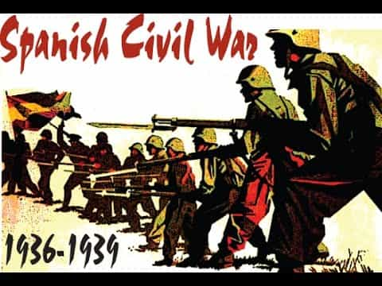

Dawn Pine (aka TheMaleBrain) is an Israeli 40+ divorced father of 2, former casualty of the blue-pill. Since he has taken the red pill his hobbies are: working out, writing, mentoring, harem management and self improvement.


Barcelona is one of the finest cities in Europe, and maybe the world. It has one of the best architectural sites, the finest football teams, and a high reputation among tourists. I myself have been there several times, both for business and pleasure and enjoyed my stays. The food is also good, and if you come at the right season, prices may not be that high.
Lovely city, isn’t it?
However, in August, the city suffered a major terror attack. ISIS succeeded in killing 24 people and injuring 130 others by using a van on the famous La Rambla boulevard. The incident has a detailed entry on Wikipedia.
Spain has had its share of terror attacks, the largest “Muslim based” being “The 2004 Madrid train bombings”. This event had 192 casualties and over 2000 injured. Spain, during the late 20th century, also suffered from the Basque separatist organization ETA acts of terror.
The Spanish MSM reaction was expected: “We are not afraid”, “We won’t stop living our lives, ” and how we must “watch out for Islamophobia”. This begs the question: why Spain? What is going on over there?
Barcelona and the Catalan state have been very eager to “embrace” migration. The Catalans have a long history of pro-leftist ideological support, starting even before the Spanish Civil War. The historian Stanley George Payne, who studied this war, came to the conclusion that the war was about a leftist revolution against a right-counter-revolution. It is worth mentioning that he shows how fascism has similarities to communism.

The Catalans have never forgotten, and would like to start their own state. They are conducting a popular poll on the subject in mid-October. This is understandable, since this state suffered quite a bit under Madrid’s reign. However, sometimes that tone becomes far-left, radical, and anarchist. And your enemy’s enemy? Maybe your friend.
Earlier this year, Barcelona mayor Ada Colau attacked her own government and claimed that it was preventing cities from accelerating the arrival of refugees. Barcelona would actually like to take in more refugees and less tourists. I do understand frustration of city folks when the rent keeps going up because of tourists, but the idea that not building new hotels will curb tourism is absurd. Actually by building more hotels you will have cheaper rents due to extended supply.
Ada Colau. Nutty as a fruit cake. This is Barcelona’s mayor
That’s not all for Catalan politics. Colau supporters, the far-left party of CUP, has made friends in Venezuela. Yes, that same country which my colleague Quintus Curtius earlier this year named “A Total Disaster”. Well, if they keep it up, they may find themselves eventually at the same place. I would advise learning the lesson before one turns the country into a leftist dictatorship.
The Spanish government was smart enough. After the events in Berlin and Nice they decided to put bollards to prevent this exact type of attack on tourist sites. All state and municipal police received those guidelines. Guess who “revised” them? That’s right – the same migrant enthusiastic Barcelona mayor. La Rambla is known to be a potential for terrorist attacks, but that did not stop Catalan’s Minister of Interior Affair to claim that “it is impossible to place it, as it would affect traffic”. I wonder if they heard about traffic engineering.
The Catalan police and the national police do not cooperate or share information as they should. They basically ignore each other (as much as they can). I believe that politicians will use every incident for their political advantage. This means that Catalan authorities repeatedly refused help from the national government, putting lives at risk.
As we know, “never let a good crisis go to waste”. So while we’re at it, the Catalan parliament adopted anti-Islamophobia measures. Those include restrictions on profiling by religion or ethnicity during police patrol as well as not using the phrase “Islamic Terror”. I think that the Spanish anti-Inquisition is at work here.
Yep. Same process again
And if there was a crisis, let’s use the court of law. If you have a convicted felon, who is not of your nationality, what would you do with him? No, they are not to be deported or restricted. They should be cuddled and “assimilated”. Don’t believe me? Here is a case study. After being convicted of drug trafficking, and sitting in jail for four years, you would expect that a known terrorist would be expelled, but no. He has a track record of being registered in the Spanish social security system for six years, four of which were in jail. His lawyer claimed that this means that this legalizes his stay in Spain. I have no idea how dumb that judge was, but it seems that he can probably compete with Spongebob Square Pants.
We would all like to believe that the attack might have shaken up Catalan and Barcelona government. Not a chance. The left rejects efforts to harden the penal code. They still see the problem as being the war in Iraq and Saudi Arabia. This has common sense embedded in it, but we fail to see any solutions coming from them.
Keeping up the message of peace, love, and harmony sounds good. Too bad convinced ISIS about that. Colau’s Twitter account is full of those platitudes stating that terror will not prevent Barcelona from remaining a united and open city. I think the 1970s taught us that that does not work. Staying ego-invested may take future lives of tourist and locals as well.

Lovely Barcelona. Let’s hope the Catalans don’t ruin it
It is possible that the Catalans are reenacting the Spanish civil war. They probably believe that they are the brave democratic republicans fighting the evil fascist monarch religious regime. It sure seems like that when one reads their rhetoric. However, if they don’t open their eyes, the result might be reenacting the 15th century Reconquista. But this time – the other way around.
Read Next: Orange Bus In Spain Causes Political And Social Outrage For Stating There Are Two Sexes